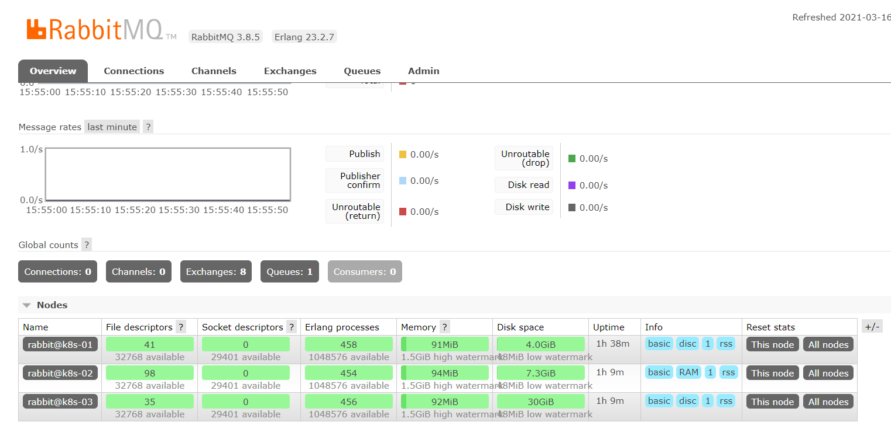
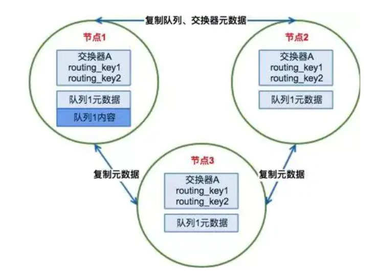
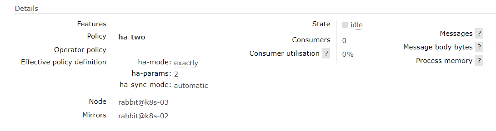
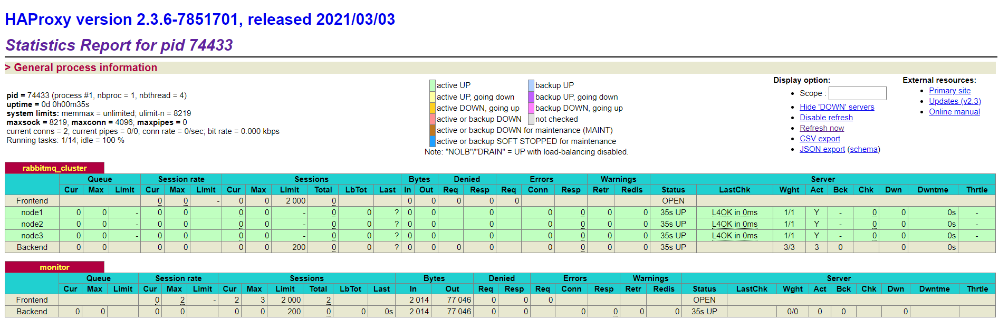

基于 HAProxy + KeepAlived 搭建 RabbitMQ 高可用集群
一、集群简介
1.1 集群架构
当单台 RabbitMQ 服务器的处理消息的能力达到瓶颈时，此时可以通过 RabbitMQ 集群来进行扩展，从而达到提升吞吐量的目的。RabbitMQ 集群是一个或多个节点的逻辑分组，集群中的每个节点都是对等的，每个节点共享所有的用户，虚拟主机，队列，交换器，绑定关系，运行时参数和其他分布式状态等信息。一个高可用，负载均衡的 RabbitMQ 集群架构应类似下图：

这里对上面的集群架构做一下解释说明：
首先一个基本的 RabbitMQ 集群不是高可用的，虽然集群共享队列，但在默认情况下，消息只会被路由到某一个节点的符合条件的队列上，并不会同步到其他节点的相同队列上。假设消息路由到 node1 的 my-queue 队列上，但是 node1 突然宕机了，那么消息就会丢失，想要解决这个问题，需要开启队列镜像，将集群中的队列彼此之间进行镜像，此时消息就会被拷贝到处于同一个镜像分组中的所有队列上。
其次 RabbitMQ 集群本身并没有提供负载均衡的功能，也就是说对于一个三节点的集群，每个节点的负载可能都是不相同的，想要解决这个问题可以通过硬件负载均衡或者软件负载均衡的方式，这里我们选择使用 HAProxy 来进行负载均衡，当然也可以使用其他负载均衡中间件，如 LVS 等。HAProxy 同时支持四层和七层负载均衡，并基于单一进程的事件驱动模型，因此它可以支持非常高的井发连接数。
接着假设我们只采用一台 HAProxy ，那么它就存在明显的单点故障的问题，所以至少需要两台 HAProxy ，同时这两台 HAProxy 之间需要能够自动进行故障转移，通常的解决方案就是 KeepAlived 。KeepAlived 采用 VRRP (Virtual Router Redundancy Protocol，虚拟路由冗余协议) 来解决单点失效的问题，它通常由一主一备两个节点组成，同一时间内只有主节点会提供对外服务，并同时提供一个虚拟的 IP 地址 (Virtual Internet Protocol Address ，简称 VIP) 。 如果主节点故障，那么备份节点会自动接管 VIP 并成为新的主节点 ，直到原有的主节点恢复。
1.1 基于Linux系统安装RabbitMQ
注意：需要先设置linux机器别名称 hostnamectl set-hostname 机器别名 --static 每台服务器配置ip与主机名称的映射关系 vi /etc/hosts 192.168.3.215 rabbit1 192.168.3.216 rabbit2 192.168.3.217 rabbit3
1.2 安装Erlang
x1#第一步2curl -s https://packagecloud.io/install/repositories/rabbitmq/erlang/script.rpm.sh | sudo bash34#第二步 安装erlang5yum install erlang67#第三步 查看erlang版本号,在命令行直接输入erl8erl1.3 安装RabbitMQ
xxxxxxxxxx251#第一步 先导入两个key2rpm --import https://packagecloud.io/rabbitmq/rabbitmq-server/gpgkey3rpm --import https://packagecloud.io/gpg.key45#第二步6curl -s https://packagecloud.io/install/repositories/rabbitmq/rabbitmq-server/script.rpm.sh | sudo bash78#第三步9wget https://github.com/rabbitmq/rabbitmq-server/releases/download/v3.8.5/rabbitmq-server-3.8.5-1.el8.noarch.rpm1011#第四步12rpm --import https://www.rabbitmq.com/rabbitmq-release-signing-key.asc1314#第五步15yum -y install epel-release16yum -y install socat1718#第六步19rpm -ivh rabbitmq-server-3.8.5-1.el8.noarch.rpm2021#第七步 启用管理平台插件，启用插件后，可以可视化管理RabbitMQ22rabbitmq-plugins enable rabbitmq_management2324#第八步 启动应用25systemctl start rabbitmq-server1.4 设置访问权限
xxxxxxxxxx81#创建管理员账户2rabbitmqctl add_user gerry gerry3#设置注册的账户为管理员4rabbitmqctl set_user_tags gerry administrator5#授权远程访问6rabbitmqctl set_permissions -p / gerry "." "." ".*"7#重启服务8systemctl restart rabbitmq-server
1.2 部署情况
下面我们开始进行搭建，这里我使用三台主机进行演示，主机名分别为 rabbit1、rabbit2和 rabbit3 ，其功能分配如下：
- 215服务器**：部署 RabbitMQ + HAProxy + KeepAlived
- 216 服务器**：部署 RabbitMQ + HAProxy + KeepAlived
- 217 服务器**：部署 RabbitMQ
以上三台主机上我均已安装好了 RabbitMQ
二、RabbitMQ 集群搭建
首先先进行 RabbitMQ 集群的搭建，具体步骤如下：
2.1 停止服务rabbit2、rabbit3
xxxxxxxxxx11rabbitmqctl stop_app2.2 拷贝 cookie
将 k8s-01上的 .erlang.cookie 文件拷贝到其他两台主机上。该 cookie 文件相当于密钥令牌，集群中的 RabbitMQ 节点需要通过交换密钥令牌以获得相互认证，因此处于同一集群的所有节点需要具有相同的密钥令牌，否则在搭建过程中会出现 Authentication Fail 错误。
RabbitMQ 服务启动时，erlang VM 会自动创建该 cookie 文件，默认的存储路径为 /var/lib/rabbitmq/.erlang.cookie 或 $HOME/.erlang.cookie，该文件是一个隐藏文件，需要使用 ls -al 命令查看。这里我使用的是 root 账户，$HOME 目录就是 /root 目录，对应的拷贝命令如下：
xxxxxxxxxx21scp /var/lib/rabbitmq/.erlang.cookie root@192.168.3.216:/var/lib/rabbitmq2scp /var/lib/rabbitmq/.erlang.cookie root@k8s-03:/var/lib/rabbitmq由于你可能在三台主机上使用不同的账户进行操作，为避免后面出现权限不足的问题，这里建议将 cookie 文件原来的 400 权限改为 777，命令如下：
xxxxxxxxxx11chmod 400 /root/.erlang.cookie注：cookie 中的内容就是一行随机字符串，可以使用 cat 命令查看。
2.3 集群搭建
RabbitMQ 集群的搭建需要选择其中任意一个节点为基准，将其它节点逐步加入。这里我们以 k8s-01 为基准节点，将 k8s-02 和 k8s-03 加入集群。在 k8s-02 和 k8s-03 上执行以下命令：
xxxxxxxxxx81# 1.停止服务2rabbitmqctl stop_app3# 2.重置状态（需要更改节点类型的时候执行，首次不需要执行，除非你节点是以disk加入集群的）4rabbitmqctl reset5# 3.节点加入6rabbitmqctl join_cluster --ram rabbit@k8s-01 7# 4.启动服务8rabbitmqctl start_appjoin_cluster 命令有一个可选的参数 --ram ，该参数代表新加入的节点是内存节点，默认是磁盘节点。如果是内存节点，则所有的队列、交换器、绑定关系、用户、访问权限和 vhost 的元数据都将存储在内存中，如果是磁盘节点，则存储在磁盘中。内存节点可以有更高的性能，但其重启后所有配置信息都会丢失，因此RabbitMQ 要求在集群中至少有一个磁盘节点，其他节点可以是内存节点。当内存节点离开集群时，它可以将变更通知到至少一个磁盘节点；然后在其重启时，再连接到磁盘节点上获取元数据信息。除非是将 RabbitMQ 用于 RPC 这种需要超低延迟的场景，否则在大多数情况下，RabbitMQ 的性能都是够用的，可以采用默认的磁盘节点的形式。这里为了演示，k8s-02 我就设置为内存节点。
另外，如果节点以磁盘节点的形式加入，则需要先使用 reset 命令进行重置，然后才能加入现有群集，重置节点会删除该节点上存在的所有的历史资源和数据。采用内存节点的形式加入时可以略过 reset 这一步，因为内存上的数据本身就不是持久化的。
2.4 查看集群状态
1. 命令行查看
在 hadoop002 和 003 上执行以上命令后，集群就已经搭建成功，此时可以在任意节点上使用 rabbitmqctl cluster_status 命令查看集群状态，输出如下：
xxxxxxxxxx11rabbitmqctl cluster_status默认的 cluster_name 名字为 rabbit@k8s-01，如果你想进行修改，可以使用以下命令：
xxxxxxxxxx11rabbitmqctl set_cluster_name my_rabbitmq_cluster2. UI 界面查看
除了可以使用命令行外，还可以使用打开任意节点的 UI 界面进行查看，情况如下：

RabbitMQ集群元数据的同步
RabbitMQ集群会始终同步四种类型的内部元数据：
- 队列元数据：队列名称和它的属性
- 交换器元数据：交换器名称、类型和属性
- 绑定元数据：一张简单的表格展示了如何将消息路由到队列
- vhost元数据：为vhost内的队列、交换器和绑定提供命名空间和安全属性
因此，当用户访问其中任何一个RabbitMQ节点时，通过rabbitmqctl查询到的queue／user／exchange/vhost等信息都是相同的。
为何RabbitMQ集群仅采用元数据同步的方式?
- 存储空间。如果每个集群节点都拥有所有Queue的完全数据拷贝，那么每个节点的存储空间会非常大，集群的消息积压能力会非常弱（无法通过集群节点的扩容提高消息积压能力）；
- 性能。消息的发布者需要将消息复制到每一个集群节点，对于持久化消息，网络和磁盘同步复制的开销都会明显增加。
RabbitMQ集群发送/订阅消息的基本原理
RabbitMQ集群的工作原理图如下：

客户端直接连接队列所在节点
如果有一个消息生产者或者消息消费者通过amqp-client的客户端连接至节点1进行消息的发布或者订阅，那么此时的集群中的消息收发只与节点1相关。
客户端连接的是非队列数据所在节点
如果消息生产者所连接的是节点2或者节点3，此时队列1的完整数据不在该两个节点上，那么在发送消息过程中这两个节点主要起了一个路由转发作用，根据这两个节点上的元数据转发至节点1上，最终发送的消息还是会存储至节点1的队列1上。同样，如果消息消费者所连接的节点2或者节点3，那这两个节点也会作为路由节点起到转发作用，将会从节点1的队列1中拉取消息进行消费。
集群节点类型
1. 磁盘节点
将配置信息和元信息存储在磁盘上（单节点系统必须是磁盘节点，否则每次重启RabbitMQ之后所有的系统配置信息都会丢失）。
2. 内存节点
将配置信息和元信息存储在内存中。性能是优于磁盘节点的。
RabbitMQ要求集群中至少有一个磁盘节点，当节点加入和离开集群时，必须通知磁盘节点（如果集群中唯一的磁盘节点崩溃了，则不能进行创建队列、创建交换器、创建绑定、添加用户、更改权限、添加和删除集群节点）。总之如果唯一磁盘的磁盘节点崩溃，集群是可以保持运行的，但不能更改任何东西。因此建议在集群中设置两个磁盘节点，只要一个可以，就能正常操作。
2.5 配置镜像队列
1. 开启镜像队列
这里我们为所有队列开启镜像配置，其语法如下：
xxxxxxxxxx11rabbitmqctl set_policy ha-all "^" '{"ha-mode":"all"}'2. 复制系数
在上面我们指定了 ha-mode 的值为 all ，代表消息会被同步到所有节点的相同队列中。这里我们之所以这样配置，因为我们本身只有三个节点，因此复制操作的性能开销比较小。如果你的集群有很多节点，那么此时复制的性能开销就比较大，此时需要选择合适的复制系数。通常可以遵循过半写原则，即对于一个节点数为 n 的集群，只需要同步到 n/2+1 个节点上即可。此时需要同时修改镜像策略为 exactly，并指定复制系数 ha-params，示例命令如下：
xxxxxxxxxx11rabbitmqctl set_policy ha-two "^" '{"ha-mode":"exactly","ha-params":2,"ha-sync-mode":"automatic"}'除此之外，RabbitMQ 还支持使用正则表达式来过滤需要进行镜像操作的队列，示例如下：
xxxxxxxxxx11rabbitmqctl set_policy ha-all "^ha\." '{"ha-mode":"all"}'此时只会对 ha 开头的队列进行镜像。更多镜像队列的配置说明，可以参考官方文档：Highly Available (Mirrored) Queues
3. 查看镜像状态
配置完成后，可以通过 Web UI 界面查看任意队列的镜像状态，情况如下：

2.6 节点下线
以上介绍的集群搭建的过程就是服务扩容的过程，如果想要进行服务缩容，即想要把某个节点剔除集群，有两种可选方式：
第一种：可以先使用 rabbitmqctl stop 停止该节点上的服务，然后在其他任意一个节点上执行 forget_cluster_node 命令。这里以剔除 k8s-03 上的服务为例，此时可以在 k8s-01 或 k8s-02 上执行下面的命令：
xxxxxxxxxx11rabbitmqctl forget_cluster_node rabbit@k8s-03第二种方式：先使用 rabbitmqctl stop 停止该节点上的服务，然后再执行 rabbitmqctl reset 这会清空该节点上所有历史数据，并主动通知集群中其它节点它将要离开集群。
2.7 集群的关闭与重启
没有一个直接的命令可以关闭整个集群，需要逐一进行关闭。但是需要保证在重启时，最后关闭的节点最先被启动。如果第一个启动的不是最后关闭的节点，那么这个节点会等待最后关闭的那个节点启动，默认进行 10 次连接尝试，超时时间为 30 秒，如果依然没有等到，则该节点启动失败。
这带来的一个问题是，假设在一个三节点的集群当中，关闭的顺序为 k8s-01，k8s-02，k8s-03 如果 k8s-01 因为故障暂时没法恢复，此时 k8s-02 和 k8s-03 就无法启动。想要解决这个问题，可以先将 k8s-01 节点进行剔除，命令如下：
xxxxxxxxxx11rabbitmqctl forget_cluster_node rabbit@k8s-01 -offline此时需要加上 -offline 参数，它允许节点在自身没有启动的情况下将其他节点剔除。
2.8 修改节点数据的类型
xxxxxxxxxx41rabbitmqctl stop_app2rabbitmqctl reset # 如果是磁盘节点需要重置内容3rabbitmqctl join_cluster --ram rabbit@k8s-014rabbitmqctl start_app三、HAProxy 环境搭建
3.1 下载
HAProxy 官方下载地址为：https://www.haproxy.org/#down ，如果这个网站无法访问，也可以从 https://src.fedoraproject.org/repo/pkgs/haproxy/ 上进行下载。这里我下载的是 2.x 的版本，下载后进行解压：
xxxxxxxxxx11tar xf haproxy-2.3.6.tar.gz
3.2 编译
进入解压后根目录，执行下面的编译命令：
xxxxxxxxxx21make TARGET=linux-glibc PREFIX=/usr/app/haproxy-2.3.62make install PREFIX=/usr/app/haproxy-2.3.63.3 配置环境变量
配置环境变量：
xxxxxxxxxx11vim /etc/profilexxxxxxxxxx21export HAPROXY_HOME=/usr/app/haproxy-2.3.62export PATH=$PATH:$HAPROXY_HOME/sbin使得配置的环境变量立即生效：
xxxxxxxxxx11source /etc/profile
3.4 负载均衡配置
新建配置文件 haproxy.cfg，这里我新建的位置为：/etc/haproxy/haproxy.cfg，文件内容如下：
xxxxxxxxxx571global2 # 日志输出配置、所有日志都记录在本机，通过 local0 进行输出3 log 127.0.0.1 local0 info4 # 最大连接数5 maxconn 40966 # 改变当前的工作目录7 chroot /usr/app/haproxy-2.3.68 # 以指定的 UID 运行 haproxy 进程9 uid 9910 # 以指定的 GID 运行 haproxy 进程11 gid 9912 # 以守护进行的方式运行13 daemon14 # 当前进程的 pid 文件存放位置15 pidfile /usr/app/haproxy-2.3.6/haproxy.pid1617# 默认配置18defaults19 # 应用全局的日志配置20 log global21 # 使用4层代理模式，7层代理模式则为"http"22 mode tcp23 # 日志类别24 option tcplog25 # 不记录健康检查的日志信息26 option dontlognull27 # 3次失败则认为服务不可用28 retries 329 # 每个进程可用的最大连接数30 maxconn 200031 # 连接超时32 timeout connect 5s33 # 客户端超时34 timeout client 120s35 # 服务端超时36 timeout server 120s3738# 绑定配置39listen rabbitmq_cluster40 bind :567141 # 配置TCP模式42 mode tcp43 # 采用加权轮询的机制进行负载均衡44 balance roundrobin45 # RabbitMQ 集群节点配置46 server node1 k8s-01:5672 check inter 5000 rise 2 fall 3 weight 147 server node2 k8s-02:5672 check inter 5000 rise 2 fall 3 weight 148 server node3 k8s-03:5672 check inter 5000 rise 2 fall 3 weight 14950# 配置监控页面51listen monitor52 bind :810053 mode http54 option httplog55 stats enable56 stats uri /stats57 stats refresh 5s负载均衡的主要配置在 listen rabbitmq_cluster 下，这里指定负载均衡的方式为加权轮询，同时定义好健康检查机制：
xxxxxxxxxx11server node1 k8s-01:5672 check inter 5000 rise 2 fall 3 weight 1以上配置代表对地址为 hadoop001:5672 的 node1 节点每隔 5 秒进行一次健康检查，如果连续两次的检查结果都是正常，则认为该节点可用，此时可以将客户端的请求轮询到该节点上；如果连续 3 次的检查结果都不正常，则认为该节点不可用。weight 用于指定节点在轮询过程中的权重。
3.5 启动服务
以上搭建步骤在 k8s-01 和 k8s-02 上完全相同，搭建完成使用以下命令启动服务：
xxxxxxxxxx11haproxy -f /etc/haproxy/haproxy.cfg启动后可以在监控页面进行查看，端口为设置的 8100，完整地址为：http://192.168.3.191:8100/stats ，页面情况如下：

所有节点都为绿色，代表节点健康。此时证明 HAProxy 搭建成功，并已经对 RabbitMQ 集群进行监控。
四、KeepAlived 环境搭建
接着就可以搭建 Keepalived 来解决 HAProxy 故障转移的问题。这里我在 hadoop001 和 hadoop002 上安装 KeepAlived ，两台主机上的搭建的步骤完全相同，只是部分配置略有不同，具体如下：
4.1 下载
直接从 Keepalived 官方下载所需版本，这里我下载的为 2.x 的版本。下载后进行解压：
xxxxxxxxxx21wget https://www.keepalived.org/software/keepalived-2.2.2.tar.gz2tar -zxvf keepalived-2.2.2.tar.gz4.2 编译
安装相关依赖后进行编译：
xxxxxxxxxx51# 安装依赖2yum -y install libnl libnl-devel3# 编译安装4./configure --prefix=/usr/app/keepalived-2.2.25make && make install4.3 环境配置
由于不是采用 yum 的方式进行安装，而是采用压缩包的方式进行安装，此时需要进行环境配置，具体如下：
Keepalived 默认会从 /etc/keepalived/keepalived.conf 路径读取配置文件，所以需要将安装后的配置文件拷贝到该路径：
xxxxxxxxxx21mkdir /etc/keepalived2cp /usr/app/keepalived-2.2.2/etc/keepalived/keepalived.conf /etc/keepalived/将所有 Keepalived 脚本拷贝到 /etc/init.d/ 目录下：
xxxxxxxxxx51# 编译目录中的脚本2cp /root/keepalived-2.2.2/keepalived/etc/init.d/keepalived /etc/init.d/3# 安装目录中的脚本4cp /usr/app/keepalived-2.2.2/etc/sysconfig/keepalived /etc/sysconfig/5cp /usr/app/keepalived-2.2.2/sbin/keepalived /usr/sbin/设置开机自启动：
xxxxxxxxxx31chmod +x /etc/init.d/keepalived2chkconfig --add keepalived3systemctl enable keepalived.service4.4 配置 HAProxy 检查
这里先对 k8s-01上 keepalived.conf 配置文件进行修改，完整内容如下：
xxxxxxxxxx411global_defs {2 # 路由id,主备节点不能相同3 router_id node14}56# 自定义监控脚本7vrrp_script chk_haproxy {8 # 脚本位置9 script "/etc/keepalived/haproxy_check.sh" 10 # 脚本执行的时间间隔11 interval 5 12 weight 1013}1415vrrp_instance VI_1 {16 # Keepalived的角色，MASTER 表示主节点，BACKUP 表示备份节点17 state MASTER 18 # 指定监测的网卡，可以使用 ifconfig 进行查看19 interface ens3320 # 虚拟路由的id，主备节点需要设置为相同21 virtual_router_id 122 # 优先级，主节点的优先级需要设置比备份节点高23 priority 100 24 # 设置主备之间的检查时间，单位为秒 25 advert_int 1 26 # 定义验证类型和密码27 authentication { 28 auth_type PASS29 auth_pass 12345630 }3132 # 调用上面自定义的监控脚本33 track_script {34 chk_haproxy35 }3637 virtual_ipaddress {38 # 虚拟IP地址，可以设置多个39 192.168.3.200 40 }41}以上配置定义了 k8s-01上的 Keepalived 节点为 MASTER 节点，并设置对外提供服务的虚拟 IP 为 192.168.3.200。此外最主要的是定义了通过 haproxy_check.sh 来对 HAProxy 进行监控，这个脚本需要我们自行创建，内容如下：
xxxxxxxxxx141# 判断haproxy是否已经启动3if [ `ps -C haproxy --no-header | wc -l` -eq 0 ] ; then4 #如果没有启动，则启动5 haproxy -f /etc/haproxy/haproxy.cfg6fi78#睡眠3秒以便haproxy完全启动9sleep 31011#如果haproxy还是没有启动，此时需要将本机的keepalived服务停掉，以便让VIP自动漂移到另外一台haproxy12if [ `ps -C haproxy --no-header | wc -l` -eq 0 ]; then13 systemctl stop keepalived14fi创建后为其赋予执行权限：
xxxxxxxxxx11chmod +x /etc/keepalived/haproxy_check.sh这个脚本主要用于判断 HAProxy 服务是否正常，如果不正常且无法启动，此时就需要将本机 Keepalived 关闭，从而让虚拟 IP 漂移到备份节点。备份节点的配置与主节点基本相同，但是需要修改其 state 为 BACKUP；同时其优先级 priority 需要比主节点低。完整配置如下：
xxxxxxxxxx331global_defs 2 # 路由id,主备节点不能相同 3 router_id node2 457vrrp_script chk_haproxy 8 script "/etc/keepalived/haproxy_check.sh" 9 interval 5 10 weight 101113vrrp_instance VI_1 14 # BACKUP 表示备份节点15 state BACKUP 16 interface ens3317 virtual_router_id 118 # 优先级，备份节点要比主节点低19 priority 50 20 advert_int 1 21 authentication 22 auth_type PASS23 auth_pass 12345624 25 26 track_script 27 chk_haproxy28 2930 virtual_ipaddress 31 192.168.3.200 32 334.5 启动服务
分别在 k8s-01 和 k8s-02上启动 KeepAlived 服务，命令如下：
xxxxxxxxxx11systemctl start keepalived启动后此时 k8s-01 为主节点，可以在 hadoop001 上使用 ip a 命令查看到虚拟 IP 的情况：

此时只有 k8s-01上是存在虚拟 IP 的，而 k8s-02 上是没有的。

4.6 验证故障转移
这里我们验证一下故障转移，因为按照我们上面的检测脚本，如果 HAProxy 已经停止且无法重启时 KeepAlived 服务就会停止，这里我们直接使用以下命令停止 Keepalived 服务：
xxxxxxxxxx11systemctl stop keepalived此时再次使用 ip a 分别查看，可以发现 hadoop001 上的 VIP 已经漂移到 hadoop002 上，情况如下：

此时对外服务的 VIP 依然可用，代表已经成功地进行了故障转移。至此集群已经搭建成功，任何需要发送或者接受消息的客户端服务只需要连接到该 VIP 即可，示例如下：
xxxxxxxxxx21ConnectionFactory factory = new ConnectionFactory();2factory.setHost("192.168.3.200");